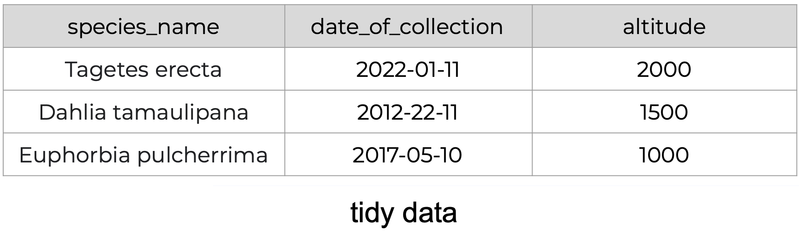
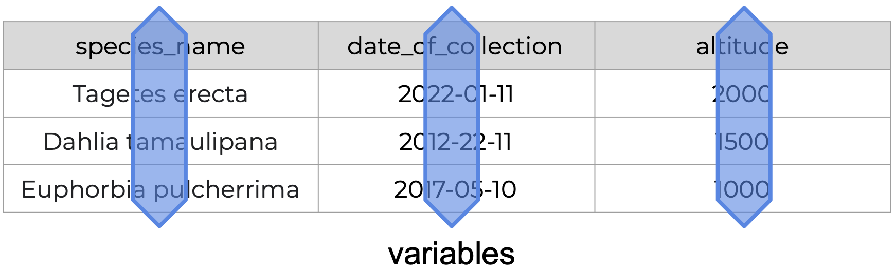
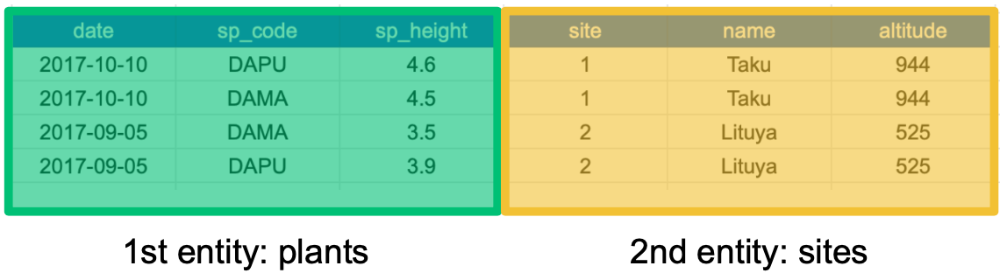
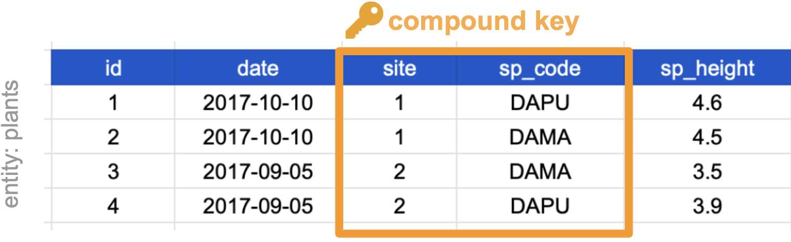
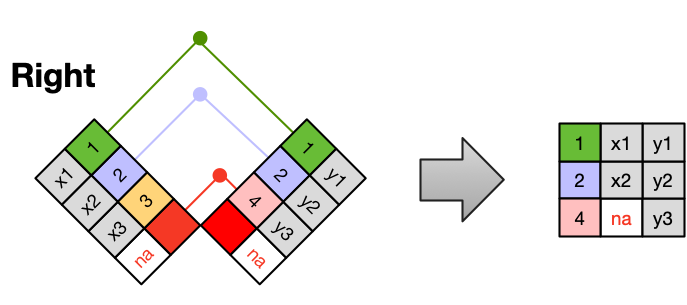

Learning Objectives
Learn how to design and create effective data tables by:
- applying tidy and normalized data principles,
- following best practices to format data tables’ content,
- relating tables following relational data models principles, and
- understanding how to perform table joins.
Tidy Data
What is tidy data?
Tidy data is a standardized way of organizing data tables that allows us to manage and analyze data efficiently, because it makes it straightforward to understand the corresponding variable and observation of each value. The tidy data principles are:
- Every column is a variable.
- Every row is an observation.
- Every cell is a single value.
- Tidy data is not a language or tool specific.
- Tidy data is not an R thing.
- Tidy data is not a
tidyverse thing.
Tidy Data is a way to organize data that will make life easier for people working with data.
(Allison Horst & Julia Lowndes)
Values, variables, observations, and entities
First, let’s get acquainted with our building blocks.
| Variables |
A characteristic the is being measured, counted or described with data.
Example: car type, salinity, year, height, mass. |
|
|
| Observations |
A single “data point” for which the measure, count or description of one or more variables is recorded.
Example: If you are collecting variables height, species, and location of plants, then each plant is an observation. |
|
|
| Value |
The record measured, count or description of a variable.
Example: 3 ft |
|
|
| Entity |
Each type of observation is an entity.
Example: If you are collecting variables height, species, and location and site name of plants and where they are observed, then plants is an entity and site is an entity. |
|
|
Assessing Tidy Data Principles
The following is an example of tidy data - it’s easy to see the three tidy data principles apply.




Recognizing untidy data
Anything that does not follow the three tidy data principles is untidy data.
There are many ways in which data can become untidy, some can be noticed right away, while others are more subtle. In this section we will look at some examples of common untidy data situations.
Example 1
The following is a screenshot of an actual dataset that came across NCEAS. We have all seen spreadsheets that look like this - and it is fairly obvious that whatever this is, it isn’t very tidy. Let’s dive deeper into why we consider it untidy data.

Multiple tables
To begin with, notice there are actually three smaller tables within this table. Although for our human brain it is easy to see and interpret this, it is extremely difficult to get a computer to see it this way.

Having multiple tables within the same table will create headaches down the road should you try to read in this information using R or another programming language. Having multiple tables immediately breaks the tidy data principles, as we will see next.
Inconsistent columns
In tidy data, each column corresponds to a single variable. If you look down a column, and see that multiple variables exist in the table, the data is not tidy. A good test for this can be to see if you think the column consists of only one unit type.

Inconsistent rows
The second principle of tidy data is: every column must be a single observation. If you look across a single row, and you notice that there are clearly multiple observations in one row, the data are likely not tidy.

Marginal sums and statistics
Marginal sums and statistics are not considered tidy. They break principle one, “Every column is a variable”, because a marginal statistic does not represent the same variable as the values it is summarizing. They also break principle two, “Every row is an observation”, because they represent a combination of observations, rather than a single one.

Example 2
Consider the following table. It’s a single one this time! It shows data about species observed at a specific site and date. The column headers refer to the following:
- date: date when a species was observed
- site: site where a species was observed
- name: site’s name
- altitude: site’s altitude
- sp1code, sp2code: species code for two plants observed
- sp1height, sp2height: height of the plants observed
Take a moment to see why this is not tidy data.

Multiple Observations
Remember that an observation is all the values measured for an individual entity.
If our entity is a single observed plant, then the values we measured are date and site of observation, the altitude, and the species code and height. This table breaks the second tidy data principles: Every row is an observation.

People often refer to this as “wide format”, because the observations are spread across a wide number of columns. Note that, should one encounter a new species in the survey, we would have to add new columns to the table. This is difficult to analyze, understand, and maintain. To solve this problem, we can create a single column for species code and a single column for species height as in the following table.

Why Tidy Data?
- Efficiency: less re-creating the wheel. Easier to apply the same tools to different datasets.
- Collaboration: Makes it easier to work with others as you can work with the same tools in the same ways.
- Reuse: It makes it easier to apply similar techniques and analysis across different or new datasets.
- Generalizability: Tools built for one tidy data set can be used to multiple other datasets. Opening posibilities of data you can work with.
“There is a specific advantage to placing varables in columns becasuse it allows R’s vectorized nature to shine. …most buit-in R functions work with vactors of values. That makes transforming tidy data feel particularly natural. (R for Data Science by Grolemund and Wickham)
Data Normalization
What is data normalization?
Data normalization is the process of creating normalized data, which are datasets free from data redundancy to simplify query, analysis, storing, and maintenance. In normalized data we organize data so that :
- Each table follows the tidy data principles
- We have separate tables for each type of entity measured
- Observations (rows) are all unique
- Each column represents either an identifying variable or a measured variable
In denormalized data observations about different entities are combined. A good indication that a data table is denormalized and needs normalization is seeing the same column values repeated across multiple rows.
Example
In the previous data table the row values for the last three columns are repeated.

This means the data is denormalized and it happens because each row has values about more than one entity:
- 1st entity: individual plants found at that site, and
- 2nd entity: sites at which the plants were observed.

If we use this information to normalize our data, we should end up with:
- one tidy table for each entity observed, and
- additional columns for identifying variables (such as site ID).
Here’s how our normalized data would look like:
Notice that each table also satisfies the tidy data principles.
Normalizing data by separating it into multiple tables often makes researchers really uncomfortable. This is understandable! The person who designed this study collected all of these measurements for a reason - so that they could analyze the measurements together. Now that our site and plant information are in separate tables, how would we use site altitude as a predictor variable for species composition, for example? We will go over a solution in the next section.
Relational Data Models
It’s rare that a data analysis involves only a single table of data. Typically you have many tables of data, and you must combine them to answer the questions that you’re interested in. Collectively, multiple tables of data are called relational data because it is the relations, not just the individual datasets, that are important. (R for Data Science Chapter 13 Relational Data)
What are relational data models?
A relational data model is a way of encoding links between multiple tables in a database. A database organized following a relational data model is a relational database. A few of the advantages of using a relational data model are:
- Enabling powerful search and filtering
- Ability to handle large, complex data sets
- Enforcing data integrity
- Decreasing errors from redundant updates
Relational data models are used by relational databases (like mySQL, MariaDB, Oracle, or Microsoft Access) to organize tables. However, you don’t have to be using a relational database or handling large and complex data to enjoy the benefits of using a relational data model.
When working with relational data, we generally don’t work with tables separately. We will need to join the information from different tables to run our analysis. To join two or more tables we need to learn about keys.
Primary and foreign keys
The main way in which relational data models encode relationships between different tables is by using keys. Keys are variables whose values uniquely identify observations. For tidy data, where variables and columns are equivalent, a column is a key if it has a different value in each row. This allows us to use keys as unique identifiers that reference particular observations and create links across tables.
Two types of keys are common within relational data models:
- Primary Key: chosen key for a table, uniquely identifies each observation in the table,
- Foreign Key: reference to a primary key in another table, used to create links between tables.
Example
On our previously normalized data for plants and sites, let’s choose primary keys for these tables and then identify any foreign keys.
Primary keys
First, notice that the columns ‘date’, ‘site’ and ‘sp_code’ cannot be primary keys because they have repeated values across rows. The columns ‘sp_height’ and ‘id’ both have different values in each row, so both are candidates for primary keys. However, the decimal values of ‘sp_height’ don’t make it as useful to use it to reference observations. So we chose ‘id’ as the primary key for this table.
For the sites table, all three columns could be keys. We chose ‘site’ as the primary key because it is the most succinct and it also allows us to link the sites table with the plants table.
Foreign keys
The ‘site’ column is the primary key of that table because it uniquely identifies each row of the table as a unique observation of a site. In the first table, however, the ‘site’ column is a foreign key that references the primary key from the second table. This linkage tells us that the first height measurement for the DAPU observation occurred at the site with the name Taku.
Compound keys
It can also be the case that a variable is not a key, but by combining it with a second variable we get that the combined values uniquely identify the rows. This is called a
- Compound Key: a key that is made up of more than one variable.
For example, the ‘site’ and ‘sp_code’ columns in the plants table cannot be keys on their own, since each has repeated values. However, when we look at their combined values (1-DAPU, 1-DAMA, 2-DAMA, 2-DAPU) we see each row has a unique value. So ‘site’ and ‘sp_code’ together form a compound key.

There are also other types of keys, like a natural key or a surrogate key. Each type of key has advantages and disadvantages. You can read more about this in this article.
Joins
Frequently, analysis of data will require merging these separately managed tables back together. There are multiple ways to join the observations in two tables, based on how the rows of one table are merged with the rows of the other. Regardless of the join we will perform, we need to start by identifying the primary key in each table and how these appear as foreign keys in other tables.
When conceptualizing merges, one can think of two tables, one on the left and one on the right.

Inner Join
An INNER JOIN is when you merge the subset of rows that have matches in both the left table and the right table.

Left Join
A LEFT JOIN takes all of the rows from the left table, and merges on the data from matching rows in the right table. Keys that don’t match from the left table are still provided with a missing value (na) from the right table.

Right Join
A RIGHT JOIN is the same as a left join, except that all of the rows from the right table are included with matching data from the left, or a missing value. Notice that left and right joins can ultimately be the same depending on the positions of the tables

Full Outer Join
Finally, a FULL OUTER JOIN includes all data from all rows in both tables, and includes missing values wherever necessary.

Sometimes people represent joins as Venn diagrams, showing which parts of the left and right tables are included in the results for each join. This representation is useful, however, they miss part of the story related to where the missing value comes from in each result.
We suggest reading the Relational Data chapter in the “R for Data Science” book for more examples and best practices about joins.
Entity-Relationship models
An Entity-Relationship model (E-R model), also known as an E-R diagram, is a way to draw a compact diagram that reflects the structure and relationships of the tables in a relational database. These can be particularly useful for big databases that have many tables and complex relationships between them.
We will explain the steps to drawing a simplified E-R model with our previous plants and sites tables.
Step 1: Identify the entities in the relational database and add each one in a box. In our case, entities are [plants] and [sites], since we are gathering observations about both of these.
Step 2: Add variables for each entity and identify keys. Add the variables as a list inside each box. Then, identify the primary and foreign keys in each of the boxes. To visualize this, we have indicated
- the primary key (of each entity) in red and
- any foreign keys in blue .
Step 3: Add relationships between entities.
Draw a line between the boxes of any two entities that have a relationship.
Identify which box has the primary key of the other as a foreign key. Let’s call the box that has the foreign key [box1] and the other box [box2]. Using the previous diagram we can see that “site” is the primary key of [sites] and appears as a foreign key in [plants]. So [plants] is [box1] and [sites] is [box2].
Add a word describing how [box1] is related to [box2] above the line connecting the two boxes. So, for example, we need to describe how [plants] is related to [sites]. The relation is “a plant is located in a site”, so we write “located” above the line indicating the relationship between [plants] and [sites].
Step 4: Add cardinality to every relationship in the diagram. At this step we want to quantify how many items in an entity are related to another entity. This is easiest if we reuse the description we found in the previous step. For example, “a plant is located in one site”. Then we add the symbol for “one” at the end of the line going from [plants] to [sites].
To finish, we also indicate how many plants are related to a single site. Since “a site has many plants”, we add the symbol for “many” at the end of the line going from [sites] to [plants]
That’s it!
Best Practices Summary
This is a summary of what we have covered, and some extra advice!
The tidy data principles are:
- Every column is a variable.
- Every row is an observation.
- Every cell is a single value.
In normalized data we organize data so that :
- We have separate tables for each type of entity measured
- Observations (rows) are all unique
- Each column represents either an identifying variable or a measured variable
- Each table follows the tidy data principles
Creating relational data models by assigning primary and foreign keys to each table allows us to maintain relationships between separate normalized tables. Choose the primary key for each table based on your understanding of the data and take efficiency into account. Once you choose a column as the primary key, make sure that all the values in that column are there!
For a big relational database, an Entity-Relationship model can be an effective way to explain how different tables and their keys are related to each other. If we need to merge tables we can do it using different types of joins.
More on Data Management
Tidy data is one very important step to data management best practices. However there is more to consider. Here we provide some extra advice from a great paper called ‘Some Simple Guidelines for Effective Data Management’.
- Design tables to add rows, not columns
- Use a scripted program (like R!)
- Non-proprietary file formats are preferred (eg: csv, txt)
- Keep a raw version of data
- Use descriptive files and variable names (without spaces!)
- Include a header line in your tabular data files
- Use plain ASCII text
In the Cleaning & Wrangling chapter we will cover more best practices for cleaning irregular and missing data and how to implement them using R.
Activity
In groups of 3-4 we will do two activities that will help us put into practice the concepts of tidy data, identifying keys and structuring relational data.
Exercise 1:Identifying Tidy Data
Look at the tables on this file and determine if they follow the three tidy data principles. If not, which ones aren’t met?
How would you wrangle the data to make it tidy? Describe the steps you would take to tidy the data.
Sketch how would the tidy version look like.
Excersice 2: Relational Databases
Our funding agency requires that we take surveys of individuals who complete our training courses so that we can report on the demographics of our trainees and how effective they find our courses to be.
In your small groups, design a set of tables that will capture information collected in a participant survey that would apply to many courses.
Don’t focus on designing a comprehensive set of questions for the survey, one or two simple questions would be sufficient (eg: “Did the course meet your expectations?”, “What could be improved?”, “To what degree did your knowledge increase?”).
Include variables (columns) with basic set of information from the surveys and about the courses, such as the date of the course and name of the course, etc.
After you have thought about what kind of information you care collecting, let’s break it down and build the entity-relationship model.
Identify the entities in the relational database and add each one in a box.
Add variables for each entity.
Identify the primary and foreign keys for those entities that relate to each other.
Add “words” describing how each entity relates
Add cardinality to every relationship in the diagram. This mean, use the EDR Crow’s Foot Quick Reference to quantify how many items in an entity are related to another entity.